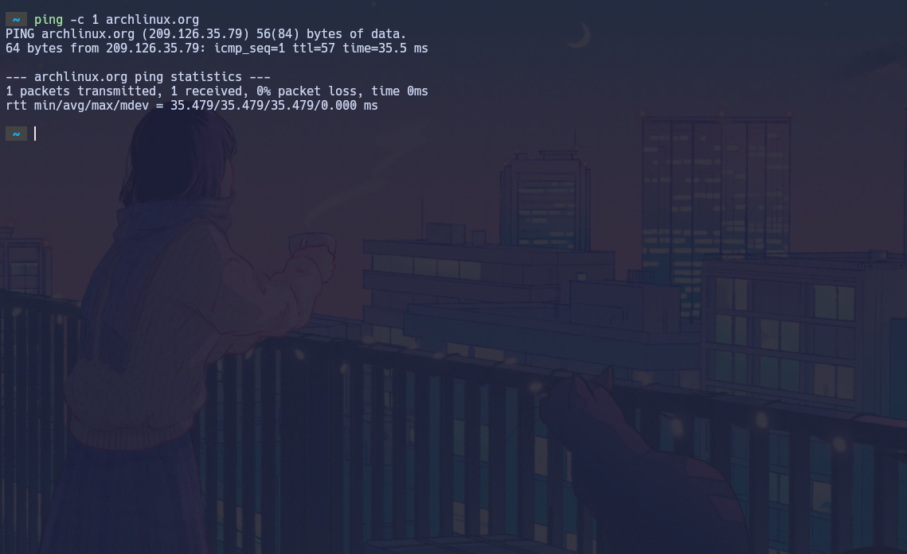

> Installing ArchLinux
The goal of this guide is to help new users perform a **clean and minimal installation of Arch Linux** on a computer using a **UEFI system**. This guide focuses only on installing the base Arch Linux system without adding any desktop environments, window managers, or extra graphical software.
The process begins with booting into the Arch Linux installation environment and preparing the system for installation. This includes verifying the internet connection, synchronizing the system clock, and partitioning the disk. After the disk is prepared, the guide continues with formatting the partitions and mounting them correctly so the base system can be installed.
Next, the guide covers installing the **core Arch Linux packages**, generating the filesystem table, and entering the new system environment to configure important components such as the **hostname, locale, time zone, and root password**. These steps are essential for creating a fully functional base system that can boot properly.
The guide also explains how to install and configure a **bootloader**, allowing the system to start correctly after rebooting. Once this is completed, the installation process ends with unmounting the partitions and restarting the system into the newly installed Arch Linux environment.
This guide is meant to be followed together with the official documentation available in the Arch Wiki, which provides deeper explanations for each step. The wiki is extremely useful if any configuration needs to be adjusted or if something changes in the installation process in the future.
By the end of this guide, the user will have a **minimal Arch Linux system installed and ready to be customized** according to their needs, whether they later choose to install a desktop environment, a window manager, development tools, or keep the system as a lightweight terminal-based environment.
Set up keyboard layout
If you want to know all the available keyboard maps, you must apply the next command
ls /usr/share/kbd/keymaps/**/*.map.gz
Also you can search an specific keyboard map by using grep, in this case, I am looking for an english keybaord
ls /usr/share/kbd/keymaps/**/*.map.gz | grep en
Now you can load the layout
loadkeys it
Internet Connection
By running the next command, you should see an output like this
loadkeys it
